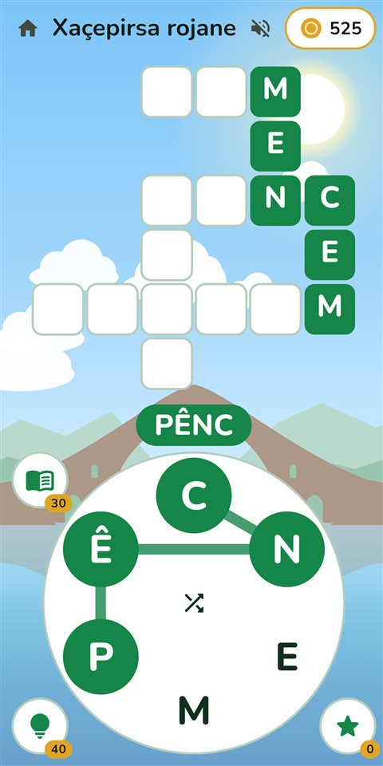
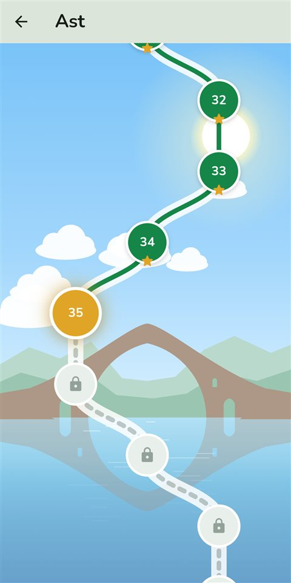
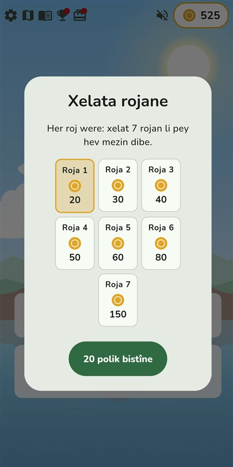

Peyv Zan
Kurmancî kelime bulmacası · A Kurmancî word puzzle
Kurmancî
Tîpên li ser çerxê bikişîne, peyvan çêke û xaçepirsê tije bike.
- 1.200 ast li ser nexşeyeke bi çar demsalan, gav bi gav dijwartir dibin
- Xaçepirsa rojane: piştî 10 astên rojê vedibe; ji bo her kesî heman xaçepirs, bi xelat
- Alîkarî: tîpekê veke an wateya peyvekê wekî nîşan bibîne
- Wateya her peyva ku tu dibînî, bi Kurmancî, Tirkî û Îngilîzî
- Bilêvkirina zêdetirî hezar peyvan, bi dengê axêverên zimanê dayikê
- Xelatên rojane, serkeftin û bîranîna rojane
- Bê înternet tê lîstin, hesab ne pêwîst e
- Xuyanî bi Kurmancî, Tirkî û Îngilîzî
Türkçe
Çemberdeki harfleri kaydır, kelimeleri bul, bulmacayı doldur.
- Dört mevsime yayılan bir haritada adım adım zorlaşan 1.200 seviye
- Günlük bulmaca: o gün 10 seviye bitirince açılır; herkese aynı bulmaca, çözene ödül
- İpuçları: bir harf aç ya da bir kelimenin anlamını ipucu olarak gör
- Bulduğun her kelimenin anlamı Kurmancî, Türkçe ve İngilizce
- Binden fazla kelimenin anadili konuşanlarca seslendirilmiş telaffuzu
- Günlük ödüller, başarımlar ve günlük hatırlatma
- Çevrimdışı oynanır, hesap gerekmez
- Kurmancî, Türkçe ve İngilizce arayüz
English
Swipe the letters on the wheel, find the words, fill the crossword.
- 1,200 levels on a map through four seasons, getting harder step by step
- Daily puzzle: opens after 10 levels that day; the same puzzle for everyone, with a reward
- Hints: reveal a letter, or see a word's meaning as a clue
- The meaning of every word you find, in Kurmancî, Turkish and English
- Pronunciations of more than a thousand words, recorded by native speakers
- Daily rewards, achievements and a daily reminder
- Plays offline, no account needed
- Interface in Kurmancî, Turkish and English





